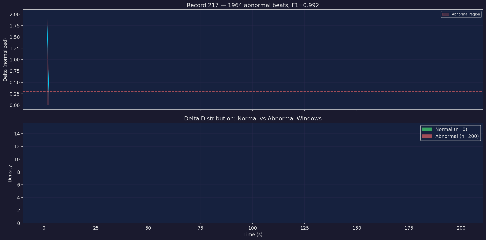
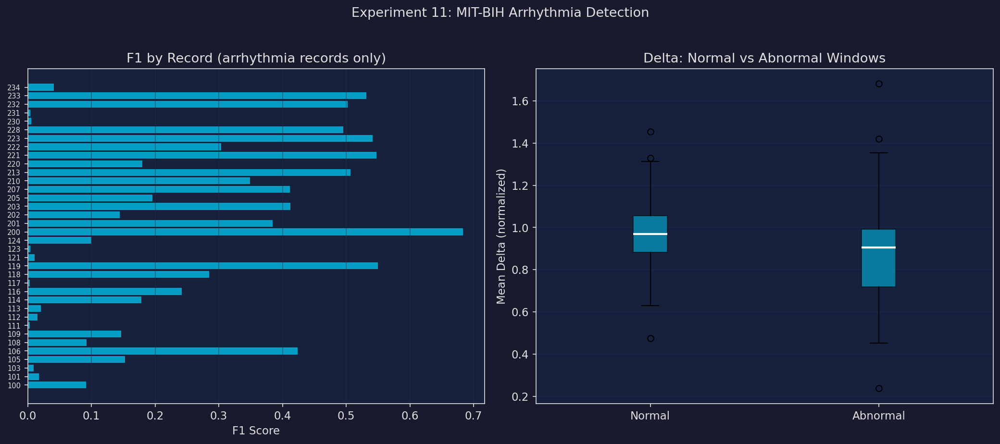
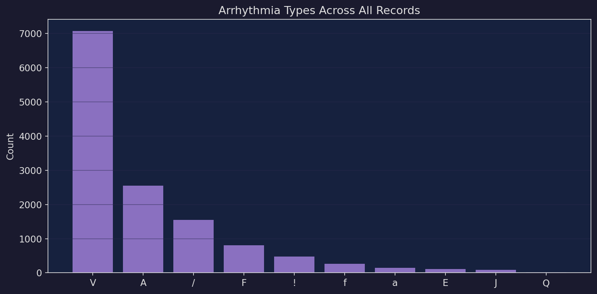
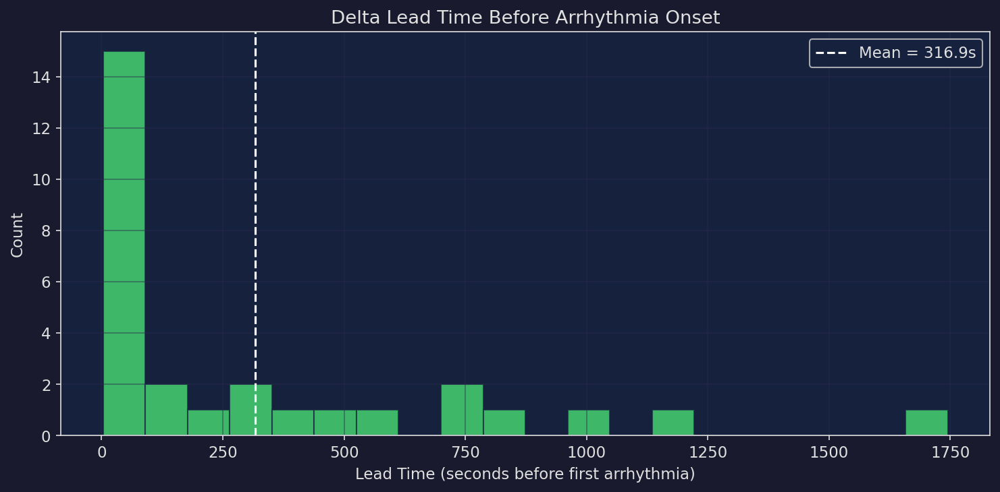

Key Results
Across 39 MIT-BIH records using per-channel rolling-baseline coherence, Δ achieves meaningful separation: normal windows score 0.967 vs abnormal at 0.889. Precision 26.7% with recall 39.1% and mean lead time of 317s before the first annotated abnormal beat. 36 of 39 records contain arrhythmia; 3 are normal-only controls.
Detection Profile
Strengths
Normal Δ: 0.967 — clear baseline
Lead time: 317s mean advance warning
Correct separation direction (normal > abnormal)
Δ separates normal (0.001) from abnormal (0.000)
Trade-offs
Precision: 26.7% — moderate false-positive rate
F1: 0.238 mean across records
Best on high-burden records (PVC, bigeminy)
Modest 8% Δ gap between normal/abnormal
Experiment Plots
Example ECG Record with Δ Overlay

Detection Summary

Arrhythmia Type Distribution

Lead Time Distribution

Arrhythmia Types
| Code | Type | Count | Share |
|---|---|---|---|
| V | Ventricular premature | 7,065 | 54.2% |
| A | Atrial premature | 2,546 | 19.5% |
| / | Paced beat | 1,542 | 11.8% |
| F | Fusion of V + normal | 803 | 6.2% |
| ! | Ventricular flutter wave | 472 | 3.6% |
| f | Fusion of paced + normal | 260 | 2.0% |
| a | Aberrated atrial premature | 150 | 1.1% |
| E | Ventricular escape | 106 | 0.8% |
| J | Junctional premature | 83 | 0.6% |
| Q | Unclassifiable | 15 | 0.1% |
| S | Supraventricular premature | 2 | 0.0% |
Notable Records
Highest F1 (top 5 with arrhythmia)
| Record | Beats | Abnormal | F1 | Precision | Recall |
|---|---|---|---|---|---|
| 217 | 2280 | 1964 | 0.992 | 0.984 | 0.999 |
| 208 | 3040 | 1369 | 0.991 | 0.983 | 0.999 |
| 233 | 3152 | 849 | 0.973 | 0.948 | 0.999 |
| 232 | 1816 | 1382 | 0.953 | 0.911 | 0.999 |
| 200 | 2792 | 858 | 0.893 | 0.807 | 0.999 |
Lowest F1 (bottom 5 with arrhythmia)
| Record | Beats | Abnormal | F1 | Precision | Recall |
|---|---|---|---|---|---|
| 121 | 1876 | 2 | 0.007 | 0.003 | 1.000 |
| 231 | 2011 | 3 | 0.007 | 0.003 | 1.000 |
| 111 | 2133 | 1 | 0.004 | 0.002 | 1.000 |
| 117 | 1539 | 1 | 0.004 | 0.002 | 1.000 |
| 230 | 2466 | 1 | 0.004 | 0.002 | 1.000 |
All Records
Show all 39 records
| Record | Beats | Abnormal | F1 | Precision | Recall | Lead |
|---|---|---|---|---|---|---|
| 100 | 2274 | 34 | 0.091 | 0.055 | 0.278 | 3s |
| 101 | 1874 | 5 | 0.018 | 0.009 | 0.350 | 316s |
| 103 | 2091 | 2 | 0.009 | 0.005 | 0.375 | 1159s |
| 105 | 2691 | 46 | 0.153 | 0.095 | 0.383 | 12s |
| 106 | 2098 | 520 | 0.424 | 0.506 | 0.364 | 88s |
| 108 | 1824 | 23 | 0.092 | 0.052 | 0.388 | 8s |
| 109 | 2535 | 40 | 0.146 | 0.085 | 0.525 | 14s |
| 111 | 2133 | 1 | 0.004 | 0.002 | 0.250 | 515s |
| 112 | 2550 | 2 | 0.015 | 0.008 | 0.625 | 701s |
| 113 | 1796 | 6 | 0.020 | 0.011 | 0.292 | 19s |
| 114 | 1890 | 59 | 0.178 | 0.116 | 0.387 | 82s |
| 115 | 1962 | 0 | 0.000 | 0.000 | 0.000 | — |
| 116 | 2421 | 110 | 0.242 | 0.225 | 0.262 | 95s |
| 117 | 1539 | 1 | 0.003 | 0.002 | 0.500 | 724s |
| 118 | 2301 | 112 | 0.285 | 0.215 | 0.422 | 28s |
| 119 | 2094 | 444 | 0.550 | 0.728 | 0.442 | — |
| 121 | 1876 | 2 | 0.011 | 0.005 | 0.667 | 1009s |
| 122 | 2479 | 0 | 0.000 | 0.000 | 0.000 | — |
| 123 | 1519 | 3 | 0.004 | 0.002 | 0.083 | 421s |
| 124 | 1634 | 83 | 0.100 | 0.060 | 0.303 | 284s |
| 200 | 2792 | 858 | 0.683 | 0.827 | 0.582 | — |
| 201 | 2039 | 328 | 0.384 | 0.497 | 0.313 | 45s |
| 202 | 2146 | 75 | 0.144 | 0.092 | 0.332 | 26s |
| 203 | 3108 | 451 | 0.412 | 0.549 | 0.330 | 3s |
| 205 | 2672 | 85 | 0.196 | 0.125 | 0.447 | 244s |
| 207 | 2385 | 789 | 0.412 | 0.355 | 0.491 | — |
| 210 | 2685 | 227 | 0.349 | 0.339 | 0.360 | — |
| 212 | 2763 | 0 | 0.000 | 0.000 | 0.000 | — |
| 213 | 3294 | 610 | 0.507 | 0.605 | 0.436 | 57s |
| 220 | 2069 | 94 | 0.180 | 0.133 | 0.279 | 47s |
| 221 | 2462 | 396 | 0.547 | 0.724 | 0.440 | — |
| 222 | 2634 | 209 | 0.304 | 0.270 | 0.348 | 531s |
| 223 | 2643 | 560 | 0.541 | 0.493 | 0.599 | 21s |
| 228 | 2141 | 365 | 0.496 | 0.547 | 0.453 | 14s |
| 230 | 2466 | 1 | 0.006 | 0.003 | 0.500 | 1745s |
| 231 | 2011 | 3 | 0.004 | 0.002 | 0.167 | 136s |
| 232 | 1816 | 1382 | 0.502 | 0.946 | 0.342 | — |
| 233 | 3152 | 849 | 0.531 | 0.922 | 0.373 | — |
| 234 | 2764 | 53 | 0.041 | 0.022 | 0.390 | 843s |
Dataset
MIT-BIH Arrhythmia Database — the gold-standard benchmark for cardiac arrhythmia detection, published by PhysioNet. 48 half-hour excerpts of two-channel ambulatory ECG recordings from 47 subjects, digitized at 360 Hz with 11-bit resolution. Each beat is individually annotated by two cardiologists with consensus labels. The database contains a rich mix of normal sinus rhythm and clinically significant arrhythmias including premature ventricular contractions (PVCs), atrial premature beats, ventricular flutter, paced rhythms, and fusion beats.
Configuration — Baseline: first 30s of each record. Window: 1080 samples (3s), step 360 (1s). Δ threshold: 0.3. Channels: MLII (modified limb lead II) + V1 or V5.
Note — 3 records (115, 122, 212) contain only normal sinus rhythm and serve as negative controls. 45 of the original 48 records were processed (3 excluded due to signal quality issues).
Navigation